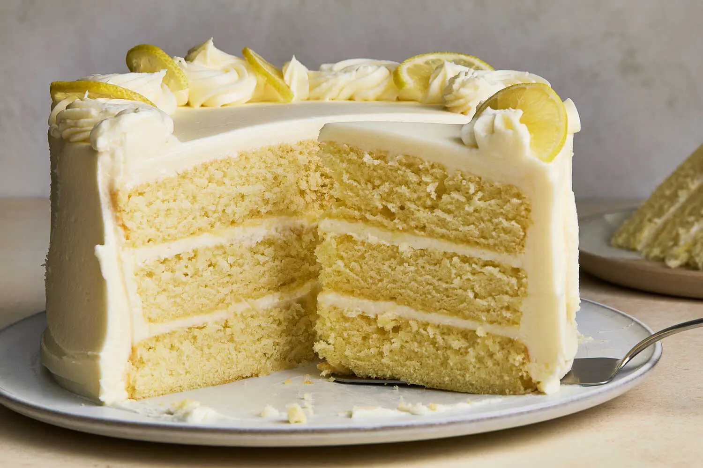

Home
Lemon Cake Recipe

About this recipe
This soft and moist lemon cake is doubly lemony,
thanks to lemon juice and lemon zest, and is soaked in a tangy
lemon syrup to further boost the flavor. These cake layers bake
up nice and flat, so you don’t even need to worry about trimming
them. The cream cheese frosting comes together easily with
two simple tricks: Start by blending the powdered sugar with
the butter until thoroughly smooth before adding the cream cheese,
and be sure to use room-temperature cream cheese so it incorporates
easily. (Firm cream cheese can lead to overbeating and liquidy
frosting.) Practice your piping skills by using a little bit of
the frosting and a star pastry tip to pipe a few rosettes around
the border of the cake. If you’d prefer not to pipe, thinly sliced
lemons make a lovely garnish all on their own, too.
Ingredients
For the Cake and Lemon Syrup
-
¾ cup/170 grams unsalted butter, cut into tablespoon-size
pieces and softened, plus more for greasing the pans.
- 2 cups/400 grams granulated sugar
- 3 medium lemons
- 1½ cups/360 milliliters whole milk
- 2 teaspoons baking powder
- ½ teaspoon baking soda
- 1½ teaspoons kosher salt (such as Diamond Crystal)
-
¼ cup/60 milliliters neutral oil
(such as canola, vegetable or grapeseed)
- 4 large eggs, at room temperature
- 1 tablespoon lemon extract (optional)
For the Frosting
- 2 cups/240 grams powdered sugar, sifted
- 1 cup/226 grams unsalted butter, softened but cool
- 16 ounces/450 grams cream cheese, softened but cool
- Zest of 1 lemon, plus 1 thinly sliced lemon for decorating (optional)
- 1 tablespoon freshly squeezed lemon juice, as needed
Lemon Cake step-by-step